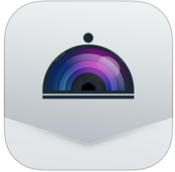
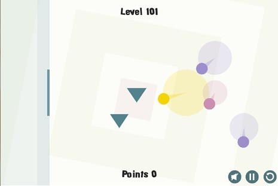

Gabriel Coman
This is my personal profile, where I post finished projects as well as demos and various tests I'm always working on.
Mobile apps:
Wicard
A good brunch this weekend ? A crazy night ? Get inspired by your moods and your friend's recommendations ! Create and share the playlist of your favorite places on Wicard.
Wicard website
Wicard iTunes page
Menu
Menu lets you see dishes before you order them. It's aiming to replace offline menus and allowing to discover food visually.

Menu website
Menu iTunes page
Finished games:
Tile Wave

TileWave is a puzzle-arcade game in which you must confront an ongoing series of numbered tiles, at ever increasing speeds. It's the latest game I developed, using Cocos2D-X and C++, and is available on both Android and iOS as a free download.
Aldough not terribly complicated, it is the game I'm most proud of, because it represents what I think is an original, fun and addictive ideea.
Download from Google Play
Download from iTunes
Space Wave

Space Wave Battles is a 2D local network space-shooter designed for the iPhone.
Up to four players can play together in a classical death-match. They can choose from six unique ships in four different environments.
It mostly came about while I experimented the ECS template and TCP-UDP connections over local networks. It's written in Objective-C and Cocos2D.
Download from iTunes
Round Pong

Round Pong is an arcade puzzle game made in the vein of classics such as Pong. It's a single player experience, requiring the player to deal with up to five balls, hurled from swinging launchers, navigating obstacles and trying to gather various powerups.
It's written in Cocos2D-X and C++
Download from Google Play
Demos:
Solar System

A model of our Solar System in which I experiment with different shaders.
Find out more.
Shader Tests

A series of example shaders with Three.js, ranging from the simple to the the more complex ones.
Find out more.
JSRender

This is a simple software renderer implemented using maths and Canvas!
Find out more.